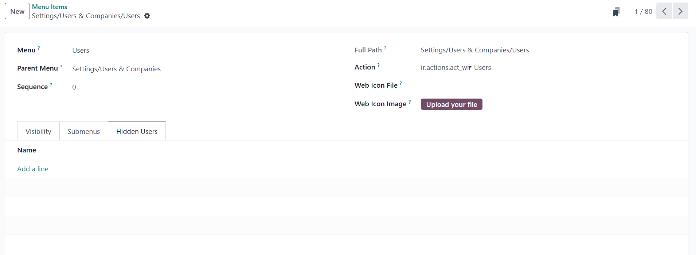
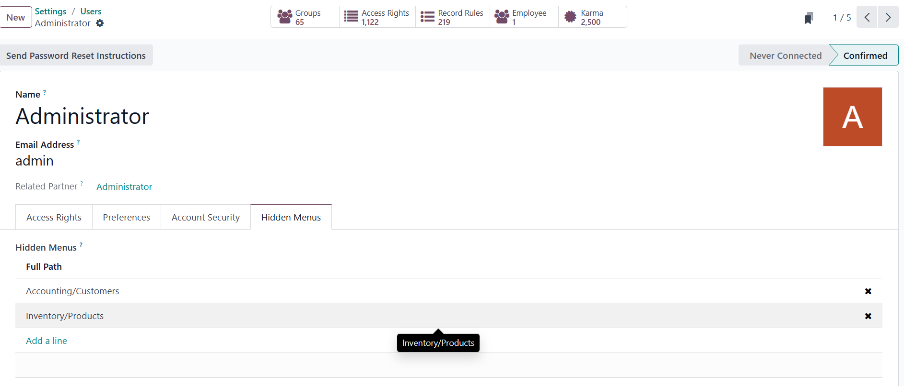

Hide Specific Menu
This module allows administrators to hide specific menu items from selected users.
Screenshots

Menu hidden for selected users

User form: selecting hidden menus
Features
- Hide menus for specific users via menu form or user form
- Bi-directional many2many relation with synchronized views
- Editable list views for easy selection
- Seamless integration with existing Odoo UI
Installation
Install this module from Apps. Make sure you have the base module installed.
Author
Mudassir Amin